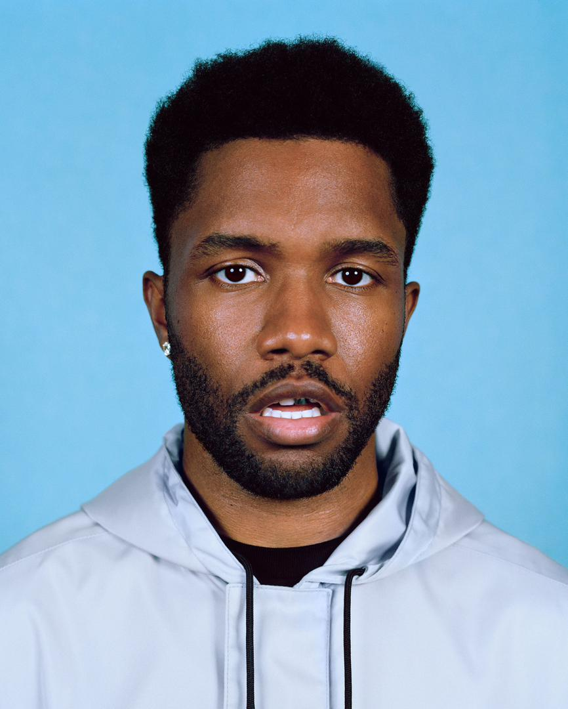
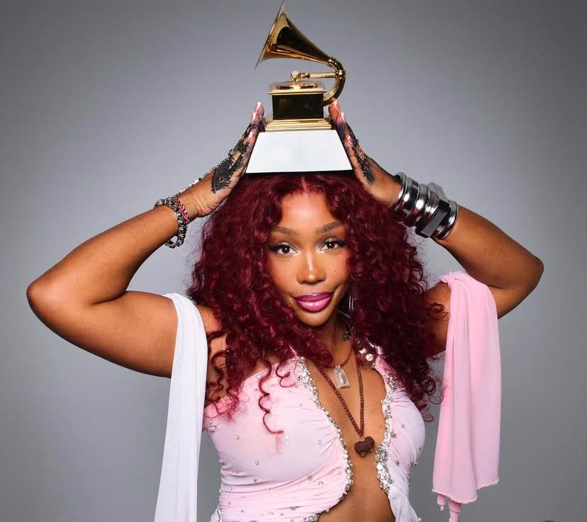

Frank Ocean is my all-time favorite artist because of his lyricism and sound. He captures human experience in a way no one else does, beautifully expressing emotions that are so hard to put into words. For me, Frank Ocean is a beacon of hope; his music has pulled me through moments I felt like the walls were caving in, reminding me that I’m not alone and that there’s always light on the other side.
Cardi B is someone I listen to because of her confidence , unapologetic energy and her bold and funny personality. Her songs make me feel empowered,they’re full of life, and fun. Beyond her music, her story inspires me even more. She came from humble beginnings and faced people who doubted her and even hoped for her failure, yet she didn’t let that stop her. Even when others pray for my downfall, seeing her rise inspires me to persevere and serves as a reminder that that hard work, confidence, and staying true to yourself can completely transform your life.
Daniel Caesar’s music feels personal, full of soul, and really touches me. He sings about love, vulnerability, and personal growth in a way that feels really honest and easy to relate to. His voice makes it simple to think about your own feelings and memories. When I listen to him, it’s like he gets me without me having to explain anything. His songs make me want to accept my emotions, and value the people who matter.

I listen to her because she’s real and relatable. She sings about emotions, relationships, and self-discovery, and it feels like she’s speaking my mind. Her music feels really personal, like she’s talking straight to my mind and heart, reassuring me that what I’m going through is real and that I’m not by myself in how I feel. Every song makes me stop and think, making it easy to get caught up in her world while learning more about myself.
Drake's honesty and versatility make him one of my favourite musicians. No matter how I'm feeling, his music feels intimate because it alternates between storytelling, vulnerability, and confidence. Listening to his music reminds me to reflect on my journey, and stay true to myself, even when life feels overwhelming.